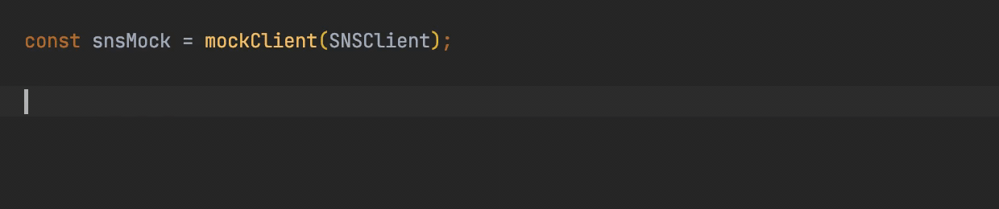

Library recommended by the AWS SDK for JavaScript team - see the introductory post on the AWS blog.
Features:
- 🌊 fluent interface - declaring behavior is short and readable
- 🔍 matching options - defining mock behavior by Command type and/or its input payload
- 🕵️ spying - checking if Commands were actually sent
- 🖋️ fully typed - same type control for declaring mock's behavior as when writing regular code
- ✅ fully tested - reliable mocks help instead of impeding
In action:

Table of Contents
About AWS SDK v3
The AWS SDK for JavaScript version 3, is the new version of SDK to use in Node.js and browser. It comes with modular architecture and improved typing, thanks to being written in TypeScript.
The recommended way of using it is to create a Client
and use it to send Commands.
For example, using SNS Client to publish a message to a topic looks like that:
import {PublishCommand, SNSClient} from '@aws-sdk/client-sns';
const sns = new SNSClient({});
const result = await sns.send(new PublishCommand({
TopicArn: 'arn:aws:sns:us-east-1:111111111111:MyTopic',
Message: 'My message',
}));
console.log(`Message published, id: ${result.MessageId}`);
This library provides an easy way to mock sending Commands
and define returned results depending on the Command type and payload.
Usage
Install
yarn add -D aws-sdk-client-mock
or
npm install -D aws-sdk-client-mock
With npm, peer dependencies will be installed, including aws-crt.
It requires cmake installed locally.
You can install it with brew install cmake or similar.
See full explanation here.
Import
CommonJS:
const {mockClient} = require('aws-sdk-client-mock');
TypeScript / ES6:
import {mockClient} from 'aws-sdk-client-mock';
Mock
Create mock for all instances or for given instance of the AWS SDK Client:
const snsMock = mockClient(SNSClient);
const dynamoDB = new DynamoDBClient({});
const dynamoDBMock = mockClient(dynamoDB);
By default, mocked Client#send() method returns undefined.
Using the obtained mock instance, you can specify the mock behavior on receiving various commands to send.
Specify default mock behavior:
snsMock.onAnyCommand().resolves({});
// same as:
snsMock.resolves({});
Specify mock behavior on receiving given command only:
snsMock
.on(PublishCommand)
.resolves({
MessageId: '12345678-1111-2222-3333-111122223333',
});
Specify mock behavior on receiving given command with given payload only:
snsMock
.on(PublishCommand, {
TopicArn: 'arn:aws:sns:us-east-1:111111111111:MyTopic',
Message: 'My message',
})
.resolves({
MessageId: '12345678-4444-5555-6666-111122223333',
});
Not all payload parameters must be defined to match
(you can force strict matching by passing third param strict: true):
snsMock
.on(PublishCommand, {
Message: 'My message',
})
.resolves({
MessageId: '12345678-4444-5555-6666-111122223333',
});
Specify mock behavior on receiving given payload only:
snsMock
.onAnyCommand({
TopicArn: 'arn:aws:sns:us-east-1:111111111111:MyTopic',
Message: 'My message',
})
.resolves({
MessageId: '12345678-4444-5555-6666-111122223333',
});
Multiple behaviors (for different commands and payloads) may be specified for a single mock:
snsMock
.resolves({ // default for any command
MessageId: '12345678-1111-2222-3333-111122223333'
})
.on(PublishCommand)
.resolves({ // default for PublishCommand
MessageId: '12345678-4444-5555-6666-111122223333'
})
.on(PublishCommand, {
TopicArn: 'arn:aws:sns:us-east-1:111111111111:MyTopic',
Message: 'My message',
})
.resolves({ // for PublishCommand with given input
MessageId: '12345678-7777-8888-9999-111122223333',
});
Specify chained behaviors - next behaviors for consecutive calls:
snsMock
.on(PublishCommand)
.resolvesOnce({ // for the first command call
MessageId: '12345678-1111-1111-1111-111122223333'
})
.resolvesOnce({ // for the second command call
MessageId: '12345678-2222-2222-2222-111122223333'
})
.resolves({ // for further calls
MessageId: '12345678-3333-3333-3333-111122223333'
});
Specify mock throwing an error:
snsMock
.rejects('mocked rejection');
Specify custom mock function:
snsMock
.callsFake(input => {
if (input.Message === 'My message') {
return {MessageId: '12345678-1111-2222-3333-111122223333'};
} else {
return {MessageId: '12345678-4444-5555-6666-111122223333'};
}
});
Together with resolvesOnce(), you can also use rejectsOnce() and callsFakeOnce()
to specify consecutive behaviors.
DynamoDB DocumentClient
You can mock the DynamoDBDocumentClient just like any other Client:
import {DynamoDBDocumentClient, QueryCommand} from '@aws-sdk/lib-dynamodb';
const ddbMock = mockClient(DynamoDBDocumentClient);
ddbMock.on(QueryCommand).resolves({
Items: [{pk: 'a', sk: 'b'}],
});
Lib Storage Upload
To mock @aws-sdk/lib-storage Upload you need to call
a helper function mockLibStorageUpload()
that will configure required S3Client command mocks:
import {mockLibStorageUpload} from 'aws-sdk-client-mock/libStorage';
import {Upload} from '@aws-sdk/lib-storage';
import {S3Client} from '@aws-sdk/client-s3';
const s3Mock = mockClient(S3Client);
mockLibStorageUpload(s3Mock);
const s3Upload = new Upload({
client: new S3Client({}),
params: {
Bucket: 'mock',
Key: 'test',
Body: 'x'.repeat(6 * 1024 * 1024), // 6 MB
},
});
s3Upload.on('httpUploadProgress', (progress) => {
console.log(progress);
});
await s3Upload.done();
When using with Jest, it requires Jest v28.0.0 or higher, supporting package exports.
You can call mockLibStorageUpload() without providing an S3Client mock.
In that case, the client mock will be created and returned from the function.
However, you still need to have @aws-sdk/client-s3 installed as a dependency.
By default, the @aws-sdk/lib-storage Upload#done() will complete successfuly.
To cause a failure, you need to specify the rejects() behavior
of one of the AWS SDK Commands used under the hood by the lib-storage.
For uploading a small file (under the defined multipart upload single part size),
lib-storage sends a PutObjectCommand. To make it fail:
s3Mock.on(PutObjectCommand).rejects();
For bigger files, it makes a series of calls including CreateMultipartUploadCommand,
UploadPartCommand, and CompleteMultipartUploadCommand. Making any of them fail will fail the upload:
s3Mock.on(UploadPartCommand).rejects();
Paginated operations
To mock a paginated operation results, simply mock the corresponding Command:
import {DynamoDBClient, paginateQuery, QueryCommand} from '@aws-sdk/client-dynamodb';
import {marshall} from '@aws-sdk/util-dynamodb';
const dynamodbMock = mockClient(DynamoDBClient);
dynamodbMock.on(QueryCommand).resolves({
Items: [
marshall({pk: 'a', sk: 'b'}),
marshall({pk: 'c', sk: 'd'}),
],
});
const dynamodb = new DynamoDBClient({});
const paginator = paginateQuery({client: dynamodb}, {TableName: 'mock'});
const items = [];
for await (const page of paginator) {
items.push(...page.Items || []);
}
SDK v2-style mocks
The AWS SDK v3 gives an option to use it similarly to v2 SDK,
with command method call instead of send():
import {SNS} from '@aws-sdk/client-sns';
const sns = new SNS({});
const result = await sns.publish({
TopicArn: 'arn:aws:sns:us-east-1:111111111111:MyTopic',
Message: 'My message',
});
Although this approach is not recommended by AWS, those calls can be mocked in the standard way:
import {PublishCommand, SNSClient} from '@aws-sdk/client-sns';
const snsMock = mockClient(SNSClient);
snsMock
.on(PublishCommand)
.resolves({
MessageId: '12345678-1111-2222-3333-111122223333',
});
Notice that in mocks you still need to use SNSClient, not SNS,
as well as Command classes.
Inspect
Inspect received calls:
snsMock.calls(); // all received calls
snsMock.call(0); // first received call
Get calls of a specified command:
snsMock.commandCalls(PublishCommand)
Get calls of a specified command with given payload
(you can force strict matching by passing third param strict: true):
snsMock.commandCalls(PublishCommand, {Message: 'My message'})
Under the hood, the library uses Sinon.js stub.
You can get the stub instance to configure and use it directly:
const snsSendStub = snsMock.send;
Jest matchers
Library provides Jest matchers that simplify verification that the mocked Client was called with given Commands:
expect(snsMock).toHaveReceivedCommand(PublishCommand);
expect(snsMock).toHaveReceivedCommandTimes(PublishCommand, 2);
expect(snsMock).toHaveReceivedCommandWith(PublishCommand, {Message: 'My message'});
expect(snsMock).toHaveReceivedNthCommandWith(2, PublishCommand, {Message: 'My message'});
Shorter aliases exist, like toReceiveCommandTimes().
Matchers are automatically imported with the library.
API Reference
See the full API Reference.
AWS Lambda example
Example below uses Jest as a test framework, but mocks will work with any testing library.
Let's take a simple Lambda function that takes a list of messages, sends them to SNS topic and returns message IDs:
import {PublishCommand, SNSClient} from '@aws-sdk/client-sns';
const snsTopicArn = process.env.SNS_TOPIC_ARN || '';
const sns = new SNSClient({});
export const handler = async (event: Event): Promise<string[]> => {
const promises = event.messages.map(async (msg, idx) => {
const publish = await sns.send(new PublishCommand({
TopicArn: snsTopicArn,
Message: msg,
}));
return publish.MessageId!;
});
return await Promise.all(promises);
};
interface Event {
messages: string[];
}
Then the tests could look like this:
import {mockClient} from 'aws-sdk-client-mock';
import {PublishCommand, SNSClient} from '@aws-sdk/client-sns';
import {handler} from '../src';
const snsMock = mockClient(SNSClient);
/**
* To be sure that unit tests are independent from each other,
* reset mock behavior between the tests.
*/
beforeEach(() => {
snsMock.reset();
});
it('message IDs are returned', async () => {
snsMock.on(PublishCommand).resolves({
MessageId: '12345678-1111-2222-3333-111122223333',
});
const result = await handler({
messages: ['one', 'two', 'three']
});
expect(result).toHaveLength(3);
expect(result[0]).toBe('12345678-1111-2222-3333-111122223333');
});
it('SNS Client is called with PublishCommand', async () => {
snsMock.on(PublishCommand).resolves({
MessageId: '111-222-333',
});
await handler({
messages: ['qq', 'xx']
});
expect(snsMock).toHaveReceivedCommandTimes(PublishCommand, 2);
});
For more examples, see the unit tests.
Caveats
Mixed @aws-sdk/types versions
If you have multiple @aws-sdk packages in dependencies in different versions,
or one of your dependencies depends on the @aws-sdk package(s)
in a different version than the one you use,
you may end up with different @aws-sdk/types dependency versions required.
If the one installed on the top level in node_modules
is in a different version than required by the Client you try to mock,
the types will be incompatible. This is because the mocking library
will use the @aws-sdk/types version from the top level of node_modules,
while your Client may be using a different one.
This often results in a long error stack trace looking similar to this:
Argument of type 'typeof SomeCommand' is not assignable to parameter of type 'new (input: SomeCommandInput) => AwsCommand<SomeCommandInput, MetadataBearer, any, any>'
Types of construct signatures are incompatible.
Type 'new (input: SomeCommandInput) => SomeCommand' is not assignable to type 'new (input: SomeCommandInput) => AwsCommand<SomeCommandInput, MetadataBearer, any, any>'.
Construct signature return types 'SomeCommand' and 'AwsCommand<SomeCommandInput, MetadataBearer, any, any>' are incompatible.
The types of 'middlewareStack.concat' are incompatible between these types.
Type '<InputType extends SomeCommandInput, OutputType extends SomeCommandOutput>(from: MiddlewareStack<InputType, OutputType>) => MiddlewareStack<...>' is not assignable to type '<InputType extends SomeCommandInput, OutputType extends MetadataBearer>(from: MiddlewareStack<InputType, OutputType>) => MiddlewareStack<...>'.
Types of parameters 'from' and 'from' are incompatible.
Type 'MiddlewareStack<InputType, OutputType>' is not assignable to type 'MiddlewareStack<InputType, SomeCommandOutput>'.
Types of property 'addRelativeTo' are incompatible.
Type '(middleware: MiddlewareType<InputType, OutputType>, options: RelativeMiddlewareOptions) => void' is not assignable to type '(middleware: MiddlewareType<InputType, SomeCommandOutput>, options: RelativeMiddlewareOptions) => void'.
Types of parameters 'middleware' and 'middleware' are incompatible.
Type 'MiddlewareType<InputType, SomeCommandOutput>' is not assignable to type 'MiddlewareType<InputType, OutputType>'.
Type 'InitializeMiddleware<InputType, SomeCommandOutput>' is not assignable to type 'MiddlewareType<InputType, OutputType>'.
Type 'InitializeMiddleware<InputType, SomeCommandOutput>' is not assignable to type 'InitializeMiddleware<InputType, OutputType>'.
Call signature return types 'InitializeHandler<InputType, SomeCommandOutput>' and 'InitializeHandler<InputType, OutputType>' are incompatible.
Type 'Promise<InitializeHandlerOutput<SomeCommandOutput>>' is not assignable to type 'Promise<InitializeHandlerOutput<OutputType>>'.
Type 'InitializeHandlerOutput<SomeCommandOutput>' is not assignable to type 'InitializeHandlerOutput<OutputType>'.
Types of property 'output' are incompatible.
Type 'SomeCommandOutput' is not assignable to type 'OutputType'.
'SomeCommandOutput' is assignable to the constraint of type 'OutputType', but 'OutputType' could be instantiated with a different subtype of constraint 'MetadataBearer'.
This is a common problem when using the Amplify library.
The solution for this is to force the version of the @aws-sdk/types
matching your Clients to be installed on the top-level of node_modules.
The easiest way to do this is to add the @aws-sdk/types
in the selected version to package.json explicitly.
However, depending on your project structure, you may need to force it differently.
For example, when using yarn, you can add the @aws-sdk/types in selected version
to the resolutions
section in package.json.
Order of mock behaviors
Wider Command matchers must be declared first, otherwise, they will take precedence over previous ones.
In this case, all PublishCommand sends will return message ID 222:
snsMock
.on(PublishCommand, myInput).resolves({MessageId: '111'})
.on(PublishCommand).resolves({MessageId: '222'});
If the order of the declarations is switched, sends with input matching myInput
will return ID 111 and all others 222.
It works similarly with onAnyCommand().
Order of type and instance mocks
When you create both a Client type mock and a specific Client instance mock(s), you need to declare type mock last. Otherwise, the other instances will not be mocked.
Right now if you create a mock for the Client type, and then mock a specific instance of this Client, with the order of mocking as here:
const sns1 = new SNSClient({}); // not mocked
mockClient(SNSClient).resolves({MessageId: '123'});
const sns2 = new SNSClient({}); // mocked
mockClient(sns2).resolves({MessageId: '456'});
const sns3 = new SNSClient({}); // not mocked
Declaring mocks in this order will fix it:
const sns1 = new SNSClient({}); // mocked - default
const sns2 = new SNSClient({}); // mocked
mockClient(sns2).resolves({MessageId: '456'});
mockClient(SNSClient).resolves({MessageId: '123'});
const sns3 = new SNSClient({}); // mocked - default
PRs to fix this are welcome.
Using with Mocha
When testing with Mocha, call mockClient()
in the beforeEach() method, not in the global scope,
to prevent overriding the mock between test files.
See this
for more details.